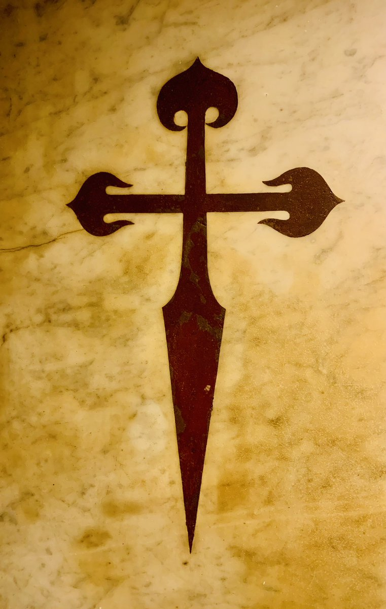
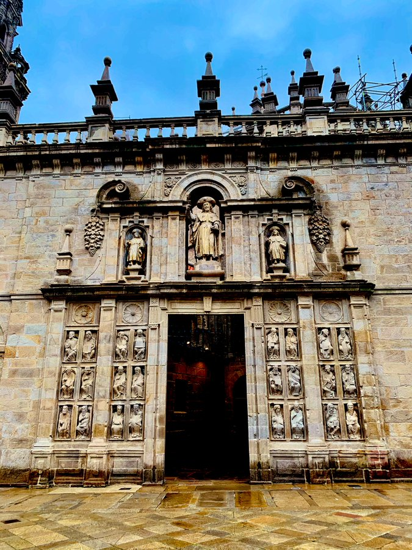
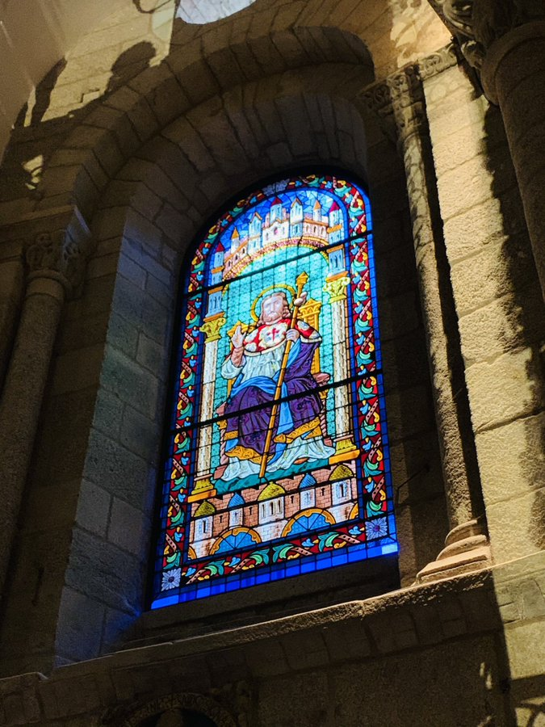

Los Hilos de Monik
Por Santiago de Compostela
Publicado el 2 de abril de 2021 - 7 tweets - Hilo original en Twitter
1
Es #ViernesSanto de la #SemanaSanta2021.
Y además, este año es el #Xacobeo2021... y como ando por Santiago de Compostela les comparto de qué va y así lo disfrutan conmigo
2
El #Xacobeo, Año Santo Compostelano o Jubileo, se da cuando la fiesta del Apóstol Santiago (25 de julio) es un domingo. La última vez fue hace 11 años y la siguiente será en 2027.
Durante el año, los fieles que visiten la tumba del Apóstol en la Catedral quedan absueltos de pecados.
3
Una aquí es atea, pero me parece algo muy bonito eso de hacer el Camino de Santiago, sin contar que la ciudad y su Catedral son hermosas.
Así que les muestro un poquito y se hacen la idea.
La Catedral, iniciada en el Medioevo, es a la vez Románica, Gótica y Barroca.
4
Por aquí se entra a la Catedral, y vemos al Apóstol Santiago el Mayor en el pórtico.
Fue el primer Apóstol martirizado, degollado por orden de Herodes Agripa hacia el año 43 en Jerusalén. Su cuerpo es trasladado por mar hasta tierras gallegas, siendo enterrado en un bosque.
5
Tomémonos un tiempo para disfrutar la Catedral.
Se construyó entre 1075 y 1211, sus capillas laterales son Románicas, el diseño de la nave es Gótico, alcanzando 32 m en la bóveda del crucero. Pero la decoración de sus interiores es profusamente barroca.
Y sí, eso es un órgano.
6
Y llegamos al pollo del arroz con pollo: la tumba del Apóstol Santiago.
Es una cripta sepulcral debajo de la Capilla Mayor. Lo curioso es que está ahí y no afuera, porque las reliquias se escondían debido a piratas como Francis Drake.
Aquí se supone que se diga una oración.
7
El proceso incluye también recibir los sacramentos de la confesión.
Así que solo hice la mitad del proceso y sustituyo la confesión por compartirles la experiencia.
Pecados perdonados o no, fue muy lindo ir a la Catedral de Santiago de Compostela durante Semana Santa.
